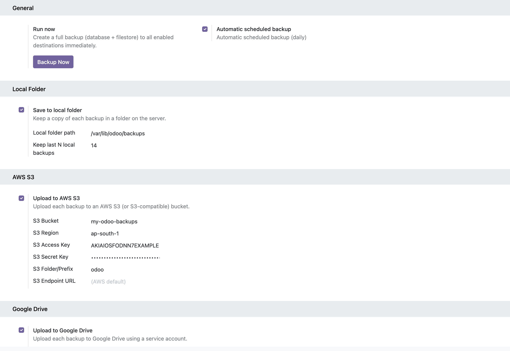
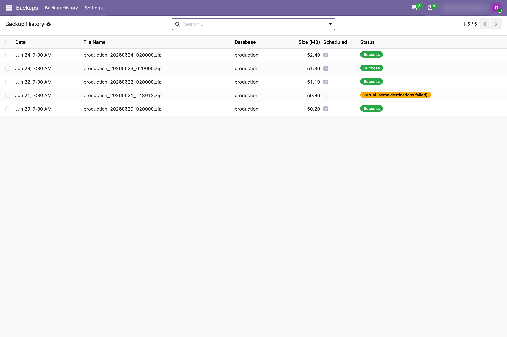
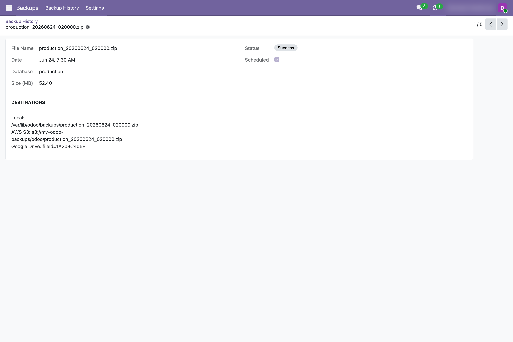

Take full backups of your Odoo database and filestore
(standard Odoo .zip) and store them on a local folder, AWS S3, Google Drive
and OneDrive — automatically on a schedule, or with one click. All configured from
Settings.
Standard Odoo .zip — restorable from Odoo's own database manager.
Automatic daily backup via cron, plus a Backup Now button.
Local folder, AWS S3 (or S3-compatible), Google Drive and OneDrive — together.
Every run logged with status, size & destinations; keep the last N local copies.
Enable each destination independently and fill in its credentials — no code, no XML. Toggle the daily scheduled backup, or run one immediately.

Every backup is logged with its date, size, whether it was scheduled, and a status — so you always know your data is safe. One failing destination never blocks the others.


Optional Python packages per destination: boto3 (S3),
google-api-python-client + google-auth (Drive).
OneDrive uses only requests (bundled with Odoo).
Odoo Version: 19.0 | License: OPL-1 | Depends on: base
Requirement: pg_dump available on the Odoo server (same major version as PostgreSQL).
Author: Arun A George
Website: arunalexgeorge.online
Email: admin@arunalexgeorge.online